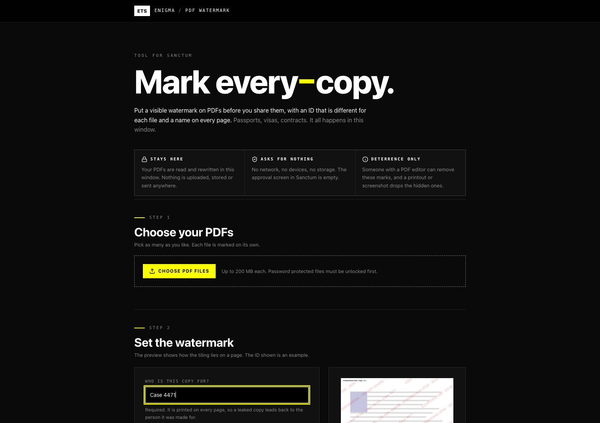
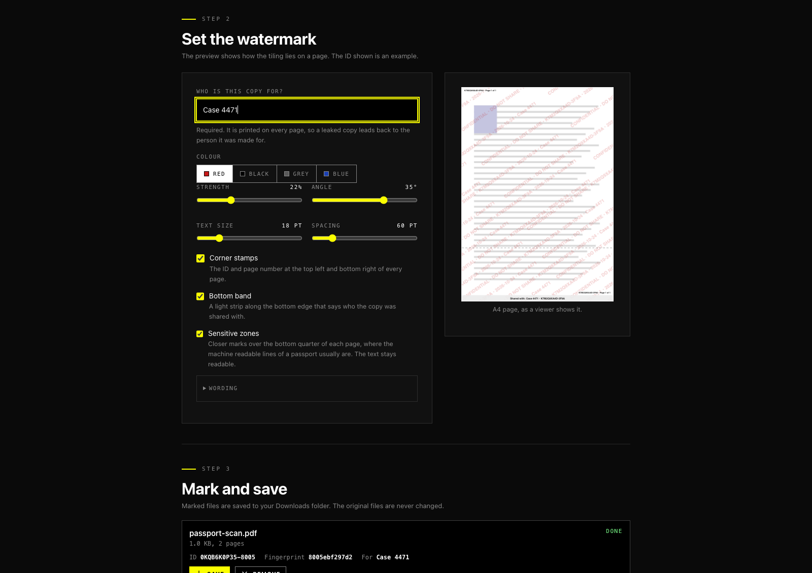
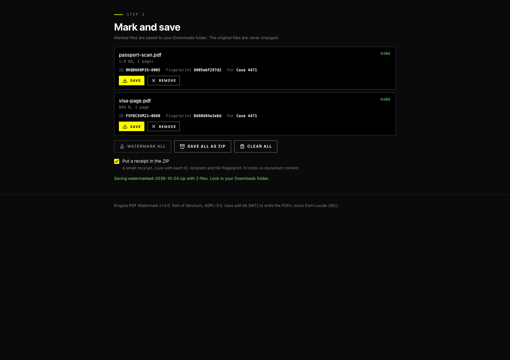

Put a visible, traceable watermark on PDFs before you share them. Runs offline and asks for no access.
Marks PDFs before you send them to someone. Each file gets its own ID, and the name of the person it is for is printed on every page, so a leaked copy leads back to the copy it came from. You choose the colour, strength, angle, size and spacing of the tiled text, and can add corner stamps with the ID and page number, a band along the bottom edge, and closer marks over the bottom quarter of each page. Several files can be marked at once and saved as a ZIP with a small receipt. Everything runs inside the tool window: your PDFs are not uploaded, stored or sent anywhere, and the tool asks Sanctum for no access at all. The marks deter and trace. Someone with a PDF editor can remove them.
Asks for no special access
Published by Enigma Technologies Solutions · Source · AGPL-3.0-only
Install opens Sanctum, which shows this tool and what it asks for, then waits for your click. Nothing is installed from the page itself. Sanctum not installed? Get Sanctum first.
Verified means the publisher is who it says and the bytes have not changed. It does not mean safe. A signature never grants access: every tool still starts with nothing approved, and you approve each capability yourself.
Screenshots



What is new
1.0.0 2026-10-24
Added. Put a tiled, diagonal watermark on any number of PDFs, with the name of the person each copy is for on every page.
Added. A different ID for every marked file, built from random characters and the start of the original file's SHA-256, written on the pages and in the PDF's information fields.
Added. Corner stamps with the ID and page number, a band along the bottom edge, and closer marks over the bottom quarter of each page.
Added. Pages that are turned, or whose page box does not start at zero, are marked correctly.
Added. Save each file, or all of them in one ZIP with a receipt that lists IDs and file fingerprints and holds no document content.
Added. First release signed by Enigma Technologies Solutions.
Manual
What it does
Adds a visible watermark to PDFs before you share them. Each file gets its own ID, and the name of the person it is for is printed on every page. If a copy leaks, the ID and the name show which copy it was.
What it asks Sanctum for
Nothing. The approval screen is empty: no storage, no network, no smart card and no device access. Your PDFs are read and rewritten in the tool window and are not uploaded, stored or sent anywhere. Marked files leave the window only when you press a save button, and they go to your Downloads folder.
Mark your files
Under Choose your PDFs, press Choose PDF files and pick one or more. Each file can be up to 200 MB. A password protected PDF has to be unlocked first.
Under Set the watermark, type who the copy is for. It is required. Then choose the colour, strength, angle, text size and spacing. The preview shows how the text lies on an A4 page.
Under Mark and save, press Watermark all. When a file shows Done, press Save next to it, or press Save all as ZIP.
The original files are never changed. Marked files are named like passport-watermarked.pdf.
What goes on the pages
Tiled text. The wording is CONFIDENTIAL • DO NOT SHARE • {UID} • {DATE} • {RECIPIENT} by default. Open Wording to change it. You can use {UID}, {DATE}, {RECIPIENT}, {PAGE} and {PAGES}.
Corner stamps. The ID and page number at the top left and bottom right of every page.
Bottom band. A light strip along the bottom edge that says who the copy was shared with.
Sensitive zones. Closer marks over the bottom quarter of each page, where the machine readable lines of a passport usually are. The text stays readable.
Hidden marks. The ID is also written as almost invisible text on every page and in the PDF's information fields, with the recipient and the file's fingerprint. The original title and keywords are kept.
The ID and the fingerprint
The ID is ten random characters, a dash, and four characters from the original file's SHA-256, for example K7M2Q9XA4D-3F9A. The fingerprint is the first twelve characters of that SHA-256. Together they let you match a marked copy to the original it came from.
The ZIP and the receipt
Save all as ZIP puts every marked file in one archive. If Put a receipt in the ZIP is on, it also holds receipt.json: each file's ID, recipient, date, page count, settings, and the SHA-256 of the original and of the marked file. The receipt holds no document content. The ZIP is stored without compression, because PDFs are already compressed.
Good to know
This deters and traces. It is not protection. Someone with a PDF editor can remove the marks, and a printout, photo or screenshot drops the hidden ones.
Letters outside the standard Latin set, such as Arabic or Chinese, cannot be drawn by the PDF's built in font. They are replaced with a question mark, and the tool tells you how many.
A window can save 25 files. Use the ZIP when you have more.
The tool cannot see whether a save worked. If a file is not in your Downloads folder, press the button again.
If you change the settings after some files are marked, those files keep the settings they were marked with. Remove them and add them again to mark them with the new ones.